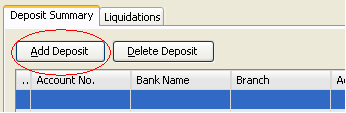

Deposit Collections
This facility enables you to deposit collections in multiple banks and bank accounts.
External checks can also be included in the deposit transaction. External checks are
checks that are not receive in collection transaction. This facility also generates supporting document
such as Reports of Collection and Deposits (RCD).
How to deposit?
1. On the menu toolbar, go to "Tax Collection -> Transaction -> Deposit" item.
You can also click on the "Deposit" icon from the home page.
2. Click on the “Next” button or press [Ctrl+N] to proceed.
3. Click on the "Add Deposit" button to add a deposit.

4. Select a fund to deposit. Select a bank account number and specify the amount to deposit.
Then, click on the "Add" button.
5. Select a deposit from the list to specify its checks and denominations.
6. If there are checks to deposit, click on the "Add Non-Cash Payment" button.
7. Select a type of check (LOCAL, REGIONAL, OUT OF TOWN, ON-US, etc.), and select check items from the list. To select a check item,
double click on the box to mark it check. You can also click on the "Select All" button to check all the items.
Then, click on the "OK" button to add the selected check items.
8. If there are external checks to deposit, click on the "Add External Non-Cash Payment" button.
Select a check type, and specify the check information (bank, check number, check date, amount).
9. Do the cash breakdown. Total Cash Breakdown must be equal to the Total Amount of cash.
10. Click on the "Deposit" button or press [Ctrl+D] to post deposit.

11. Click on the "Preview Fund Summary" button to preview the RCD of fund summary.
12. Select a fund, and click on the "Print" icon to print the RCD.
13. Link Buttons:
- Print Cash Deposit Slip - click this link button to print cash deposit slip.
- Print Cash Breakdown - click this link button to print cash deposit breakdown.
- Print Check Deposit Slip - click this link button to print check deposit slip.
- Print Fund RCD - click this link button to print the supporting document for deposit
How to close deposit?
1. On the menu toolbar, go to "Tax Collection -> Transaction -> Deposit Management" item.
You can also click on the "Deposit Management" icon from the home page.
2. Select an item to be closed from the list, and click on the "Close Deposit" button.
3. Specify the teller's validation number and validation date.

4. Click on the "Save" button to close the deposit.